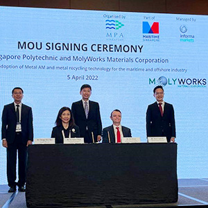

From Pledges to Progress

| # | SP's Pledges | SP's Pledges - Elaboration |
|---|---|---|
| 1 |  4 Green Mark Platinum Buildings 4 Green Mark Platinum Buildings |
T18A, T18B, T3B and the SP Sports Arena have been certified Green Mark Platinum with on-going efforts to certify all 22 buildings in SP by 2025. |
| 2 |  230 Species of Flora 230 Species of Flora |
SP's lush campus is home to an incredible biodiversity of plants including our majestic Brown Woolly Fig Heritage Trees found near Food Court 1. |
| 3 |  110+ Water Dispensers 110+ Water Dispensers |
We cultivate eco-conscious habits by encouraging students and staff to use water dispensers around campus and have ceased the use of plastic bottled water at our events. |
| 4 |  500+ Smart Sensors 500+ Smart Sensors |
Many facilities on campus are monitored with smart sensors to track human traffic and monitor air quality for the health and well-being of students and staff. |
| 5 | Enhancing the work environment for the health and well-being of our staff through air quality and temperature sensors in our offices. | |
| 6 |  13 Diplomas featuring Common Core Curriculum (CCC) 13 Diplomas featuring Common Core Curriculum (CCC) |
The CCC prepares our students for the green economy by exposing them to inter-disciplinary learning experiences and global issues, framed by the SG Green Plan and the United Nations’ Sustainable Development Goals, where they will learn to develop prototype sustainability solutions for real-life issues. |
SP's Efforts 1
SP and partners to lead industry 4.0 solutions for SMEs to develop smart and sustainable businesses
Read More
SP's Efforts 2
SP collaborates with Sembcorp and CHINT to fast-track sustainable energy development in Asia
Read More

SP's Efforts 3
Driving sustainability for maritime and offshore industry with Molyworks Materials Corporation
Read More